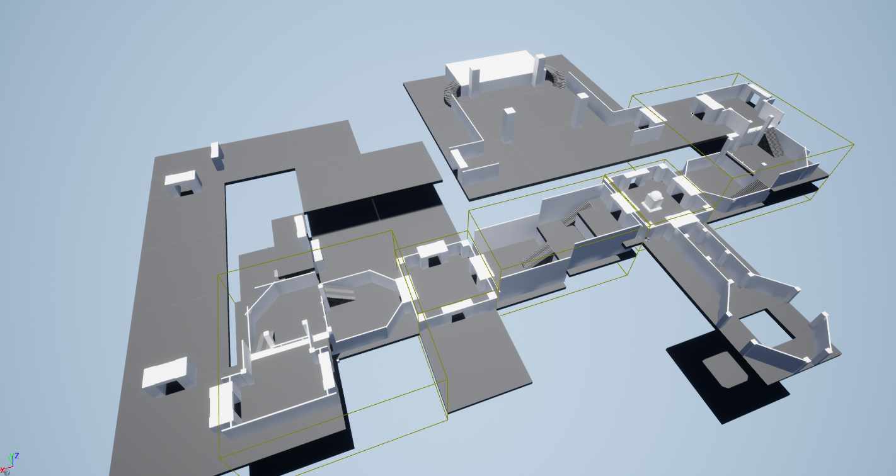

Project X
Project X is a long term project that I've been working on for the last few months, spending at least a day every week on it. The project is still in early development, focusing on the design and early mechanics of the game to get a feel of how it will play out. This game will end up being released on Steam in an Early Access state once the main mechanics are implemented.
The Idea
Project X is a 4 player max multiplayer quest oriented dungeon crawler. There will be multiple quests created, which will include going to a specific area of the dungeon, collecting items, defeating monsters and rescuing NPC's. Learning from my mistakes on my quest generation from my Procedural Pursuit, the context of those quests are vital to get correct, but unlike Procedural Pursuit there will be an element of hand crafted content which makes creating a context for the quests easier.
A huge element of this project is the dungeon that the player will play in. I recently came across a voxel based dungeon crawler on reddit, where you define the area and shape of each segment and then these segments can be connected together. Using a method like this means I could spawn non-square sized rooms. I then plan to hand craft the room inside the area that the room is defined in, so that I can add variation to the shape and feel of each room. The order and placement of rooms will be done procedurally, using the quest to guide the placement and picking of rooms.
Current State
Project X is current in a blockout stage, where I'm hand crafting a possible generation to get the feel and flow of the game under control (and with this I could use this blockout as a guide to how the dungeon should generate). This blockout stage has been really useful for determining the scale of the game, and helping to figure out how the game should feel like to be played. I plan to have fully completed the blockout stage by mid Septmember to start working on the procedural dungeon generator.
Project X has also been intergrated with SteamWorks, so that an online session can be created and hosted through steam, and all active lobbies are displayed for a player to pick from. All mechanics are replicated across the game too so that when one player opens a door that door is vibily open to everyone. In the future I plan to move the way the player picks a game to join through getting an invite from the host to join there session rather then having all sessions visible.
There is also some basic envioment mechanics for the game which includes Doors (including locked doors and keys), moving platforms and buttons, as well as some player behaviour too, such as taking damage and healing. This mechanics should create some interesting interactions for the player and allow for the option to maybe have some kind of puzzle for the player to complete in a room to progress further.
What's Next?
The next task to really work on is getting the dungeon generator working, where it can take segments and just randomly start placing them together to spawn some kind of begining structure. Once this is done I would need to start working on the quest system, so that I can take designed quest and generate a structure to fullfill that quest in terms of room space that it'll need.